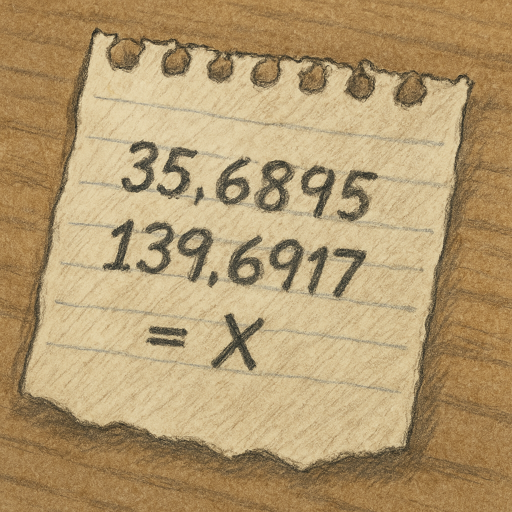

プロローグ
今日は重要な営業研修の日。しかし、休憩時間終了後、研修室の隅で営業部のエース「立半（たちはん）」が倒れているのが発見された！
傍らには割れたマグカップと、謎のメモが落ちている。どうやら彼は何かを伝えようとしていたようだ。
そして、彼のデスクからは、今日締結予定だった大型契約書が消えている…！
状況から見て、これは事故ではない。容疑者は、同じ研修に参加していた同僚の5人。
君たち研修参加者は、チームで協力し、残された証拠と容疑者の証言から、立半を襲い、契約書を奪った犯人を見つけ出さなければならない！
【謎１】現場に残されたダイイングメッセージ
立半のそばには、奇妙なメモが落ちていた。これは彼が残したダイイングメッセージかもしれない。
メモにはこう書かれている。「33.93943 / 134.51015 = X」
そして、彼のPCのログインパスワードのヒントは「Xの場所にある建物」だという。
チームで協力して、このメモの意味を解き明かし、PCへのログインパスワードを突き止めろ！
（ヒント：数字の羅列は何を意味する？インターネットで検索してみよう！）

【謎２】容疑者たちの証言と矛盾
PCの中には、容疑者5人の今日の行動記録と、立半との関係を示すメールの一部が見つかった。
各チームで証言をよく読み、矛盾点や怪しい点を探し出そう。
つるい：「休憩時間は、ほとんど自分の席にいたよ。立半とは少し話したが、口論なんてしていない。」（伏線：目撃情報と食い違う）
たいしゅう：「気分が悪くて、トイレに篭っていた。立半さんが倒れていたのは、他の人から聞いて知った。」（伏線：顔色一つ変えなかった理由は？）
ささき：「立半に忘れ物を届けに行っただけだ。彼のデスクには近づいていない。」（伏線：デスク周りをうろついていた目撃情報と矛盾）
あたえ：「経理の急ぎの連絡があって、スマホで対応していた。立半とは金銭の貸し借り？ まあ、少しね…」（伏線：金銭トラブルの詳細を隠している？）
ちゅうえい：「大事な電話があって、研修室の外で話していた。10分くらいかな。」（伏線：アリバイが曖昧。誰と話していた？）
これらの証言と、PC内の情報（例：監視カメラの一部映像で、ささきが何かを拾う様子が映っていた等）を照らし合わせ、最も怪しい人物とその理由を考えよう。
【謎３】犯人の特定と最後の証拠
謎1と謎2で得られた情報を整理しよう。
PCのデータから、立半が「ある人物」に強引な契約の協力を迫っていたメールが見つかった。
また、立半が倒れていた場所の近くから、小さな「赤いボタン」が見つかった。これは誰の持ち物だろうか？
さらに、謎1のパスワード「XXXXX」（謎1の正解）が示す場所は、ある重要な意味を持っている。
全ての情報を繋ぎ合わせ、立半を襲い、契約書を奪った真犯人を特定しよう！
結果発表
解説
チームワークについて
今回の謎解きでは、様々な情報（数字、証言、状況証拠）を組み合わせ、多角的な視点で考える必要がありました。一人では気づかないことも、チームで意見を出し合い、役割分担し、情報を共有することで、より早く、正確に答えにたどり着くことができます。
これは営業活動も同じです。個々の能力も重要ですが、チームメンバーと連携し、顧客情報や成功・失敗事例を共有し、互いにサポートし合うことで、組織として大きな成果を上げることができます。「チームで戦う」ことの面白さ、そしてその力を、これからの活動に活かしてください！